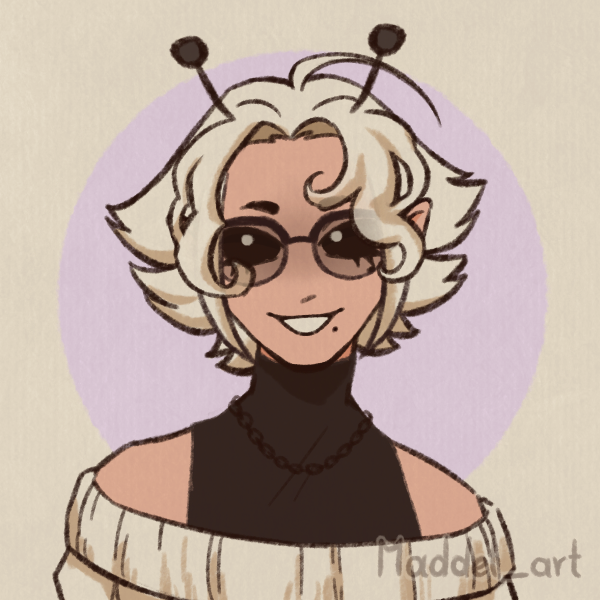

Les gros dossiers
A'lea Ludo
Marchand·e de Hasard

Marchand·e ambulant·e, escroc et joueur·euse invétéré·e, A'lea parcourt la galaxie avec son casino itinérant. Charmeur·euse spectaculaire jusqu'à l'excès, iel exploite volontiers les attentes des autres... pour s'en mettre plein les poches.
Les Placéréens
Les Placéréens sont une des nombreuses espèces peuplant la galaxie. Des humanoïdes non genrés à la peau rose, venant d'une planète pauvre avec un lourd historique de colonisation. Aujourd'hui stéréotypés pour occuper différents métiers du désir et du service, les Placéréens sont connus pour leur grande malléabilité esthétique, à la fois adaptables et invisibles. L'espèce est historiquement perçue comme de somptueux objets qu'il est tabou de posséder, souvent fantasmés, décoratifs, et rarement pris au sérieux.
Personnalité
-
Qualités :
Charismatique, rusé·e, audacieux·se.
-
Défauts :
Manipulateur·ice, imprudent·e, fuyant·e, incapable de rester vulnérable très longtemps.
Arnaqueur·se confirmé·e, iel est marchand·e avant d'être un·e honnête commerçant·e. A'lea prend un réel plaisir à flirter avec les limites et à exploiter le jugement hâtif des inconnus pour jouer de leurs préjugés et s'en mettre plein les poches. D'un naturel joueur, provocateur et désinvolte.
Être remarqué·e est pour A'lea une forme de sécurité, iel possède un besoin presque maladif d'être au centre de l'attention pour se sentir exister. C'est grisant, enivrant, mais surtout, une forme de contrôle sur la façon dont A'lea est perçu·e par le monde. Si le public se satisfait d'une scène éblouissante, il ne questionnera pas ce qui se cache dans son ombre.
Cette recherche constante d'attention pousse ainsi A'lea à prendre des risques inutiles pour le bien d'un plus grand spectacle. Iel n'en a que faire de gagner ou perdre : du moment que c'est grandiose, la Maison gagne toujours. (Et un client ivre de sa victoire ne remarque que rarement la disparition de quelques crédits et biens précieux).
La représentation ne s'arrête pratiquement jamais, A'lea ne sait pas vraiment qui iel est quand le public disparaît et que la performance s'estompe. À ces moments-là, quand personne ne regarde, iel retire ses lunettes, sort fumer seul·e sur un balcon, et laisse retomber son visage.
A'lea comprend le monde uniquement sous la forme d'un jeu, dont chaque partie ne peut qu'être gagnée ou perdue. Iel joue, tout le monde joue, qu'ils le sachent ou non. C'est ainsi pourquoi, alors qu'iel est capable de charmer une salle entière sans difficulté, A'lea semble prêt·e à fuir à la moindre marque d'affection sincère. La vulnérabilité n'a pas de règles qu'iel peut comprendre, et cela lui fait peur.
Apparence
Ayant une figure et des traits fins à la peau rose et lisse, A’lea possède des cheveux ondulés mi-longs qui changent de couleur à volonté. Deux antennes blanches en dépassent.
A’lea porte une tenue formelle blanche un peu provocatrice qui montre tout juste assez de peau à ses clients, ainsi qu’un large et ample manteau de fourrure synthétique. Un sourire presque carnassier occupe son visage, ses yeux cachés par des lunettes de soleil opaques réfléchissantes.
Un colt est ostensiblement accroché à sa ceinture, attirant l'attention loin du pistolet caché en permanence dans sa manche de manteau.